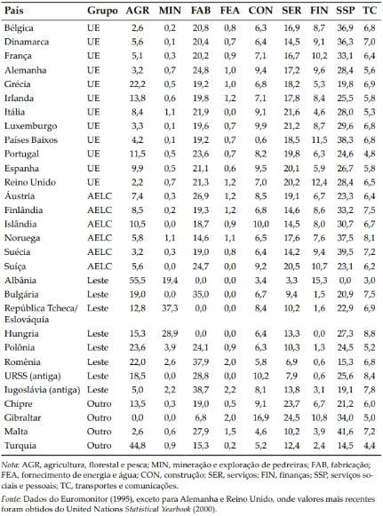
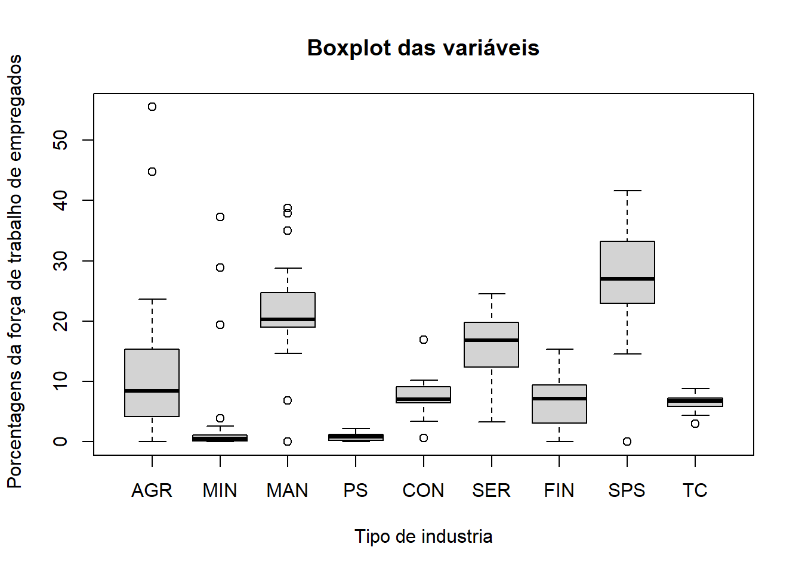

Karl Pearson (1901), inicialmente descreveu a técnica de análise de componentes principais. Ele acreditou que era a solução correta para alguns problemas de interesse biométricos naquele tempo. Hotelling (1933), posteriormente descreveu métodos computacionais práticos, mesmo naquele momento, os cáculos eram complexos para poucas variáveis porque tinham que ser feitos à mão.
A análise de componentes principais é um dos métodos multivariados mais simples, com objetivo de encontrar p variáveis \(X_1, X_2,...,X_p\) e encontrar combinações destas para produzir índices \(Z_1, Z_2,...,Z_p\) que sejam não correlacionados na ordem de sua importância, e que descrevam a variação nos dados. Os índices \(Z\) são, os componentes principais.
3 Exemplo 6.1 - Pardocas
Após uma forte tempestade em 1º de fevereiro de 1898, diversos pardais moribundos foram levados ao laboratório biológico de Hermon Bumpus na Universidade de Brown em Rhode Island. Subsequentemente, cerca de metade dos pássaros morreu, e Bumpus viu isso como uma oportunidade de encontrar suporte para a teoria da seleção natural de Charles Darwin. Para esse fim, ele fez oito medidas morfológicas em cada pássaro, e também os pesou. Os resultados de cinco das medidas são mostrados na Tabela 1.1, para fêmeas somente.
# Covariâncias da variáveis# Zi é a combinação linear das variáveis originais multiplicadas por escalares.# # A variância de Zi, é o lambda i que é um autovalor - os autovalores são as variância dos componentes principais.# Os escalares (constantes aij) são os componentes dos autovetor escalonado. No qual a soma dessas constantes ao quadrado seja 1.# va_pard_mtx_cov <-cov(va_pardocas)va_pard_mtx_cov[upper.tri(va_pard_mtx_cov, diag = F)] <-NAprint("Matrix de covariância das variáveis")
[1] "Matrix de covariância das variáveis"
print(round(va_pard_mtx_cov,4))
Total_length Alar_extent L_beak_head L_humerous L_keel_sternum
Total_length 13.3537 NA NA NA NA
Alar_extent 13.6110 25.6828 NA NA NA
L_beak_head 1.9221 2.7136 0.6316 NA NA
L_humerous 1.3306 2.1977 0.3423 0.3184 NA
L_keel_sternum 2.1922 2.6578 0.4146 0.3394 0.9828
var_va_pard <-diag(va_pard_mtx_cov)print(cat("\n","Variâncias das Variáveis originais"))
# Correlação das variáveisva_pard_mtx_cor <-cor(va_pardocas)va_pard_mtx_cor[upper.tri(va_pard_mtx_cor, diag = F)] <-NAprint(cat("\n","Matrix de correlação das variáveis"))
Matrix de correlação das variáveisNULL
print(round(va_pard_mtx_cor,4))
Total_length Alar_extent L_beak_head L_humerous L_keel_sternum
Total_length 1.0000 NA NA NA NA
Alar_extent 0.7350 1.0000 NA NA NA
L_beak_head 0.6618 0.6737 1.0000 NA NA
L_humerous 0.6453 0.7685 0.7632 1.0000 NA
L_keel_sternum 0.6051 0.5290 0.5263 0.6066 1
Considere os dados na Tabela 1.5. Eles mostram as porcentagens da força de trabalho em nove diferentes tipos de indústrias para 30 países europeus. Neste caso, méto-dos multivariados podem ser úteis para isolar grupos de países com padrões similares de empregos, e, em geral, ajudar a compreender os relacionamentos entre os países. Diferenças entre países que são relacionados a grupos políti-cos (UE, a União Europeia; AELC, a área europeia de livre comércio; países do leste europeu e outros países) podem ser de particular interesse.
4.0.1 Tabela 1.5 Porcentagens da força de trabalho de empregados em nove diferentes grupos de indústrias em 30 países na Europa

emprego <-read.csv("Euroemp.csv")head(emprego)
Country Group AGR MIN MAN PS CON SER FIN SPS TC
1 Belgium EU 2.6 0.2 20.8 0.8 6.3 16.9 8.7 36.9 6.8
2 Denmark EU 5.6 0.1 20.4 0.7 6.4 14.5 9.1 36.3 7.0
3 France EU 5.1 0.3 20.2 0.9 7.1 16.7 10.2 33.1 6.4
4 Germany EU 3.2 0.7 24.8 1.0 9.4 17.2 9.6 28.4 5.6
5 Greece EU 22.2 0.5 19.2 1.0 6.8 18.2 5.3 19.8 6.9
6 Ireland EU 13.8 0.6 19.8 1.2 7.1 17.8 8.4 25.5 5.8
va_emprego <- emprego[,-(1:2)]
boxplot(va_emprego, main ="Boxplot das variáveis", xlab ="Tipo de industria", ylab =" Porcentagens da força de trabalho de empregados")

va_emp_mtx_cov <-cov(va_emprego)va_emp_mtx_cov[upper.tri(va_emp_mtx_cov, diag = F)] <-NAprint("Matrix de covariância das variáveis")
[1] "Matrix de covariância das variáveis"
print(round(va_emp_mtx_cov,4))
AGR MIN MAN PS CON SER FIN SPS TC
AGR 151.4598 NA NA NA NA NA NA NA NA
MIN 34.4862 78.6012 NA NA NA NA NA NA NA
MAN -29.6067 -56.3359 89.4309 NA NA NA NA NA NA
PS -2.9217 -2.1324 2.2776 0.3855 NA NA NA NA NA
CON -11.7258 -3.1263 -0.8906 0.2797 7.4698 NA NA NA NA
SER -38.4026 -18.5990 -1.6074 0.4966 6.6720 26.6272 NA NA NA
FIN -8.6231 -8.7676 -10.3203 0.2334 -0.1964 7.8026 15.8936 NA NA
SPS -87.2049 -24.4959 4.1523 1.2890 1.7185 17.4820 5.7793 76.2489 NA
TC -7.3972 0.4888 2.8331 0.0807 -0.1841 -0.5403 -1.9241 5.1149 1.5212
var_va_emp <-diag(va_emp_mtx_cov)print(cat("\n","Variâncias das Variáveis originais"))
Variâncias das Variáveis originaisNULL
var_va_emp
AGR MIN MAN PS CON SER
151.4598161 78.6011954 89.4308506 0.3855172 7.4697586 26.6272299
FIN SPS TC
15.8936207 76.2489195 1.5211954
# Correlação das variáveisva_emp_mtx_cor <-cor(va_emprego)va_emp_mtx_cor[upper.tri(va_emp_mtx_cor, diag = F)] <-NAprint(cat("\n","Matrix de correlação das variáveis"))
Matrix de correlação das variáveisNULL
print(round(va_emp_mtx_cor,4))
AGR MIN MAN PS CON SER FIN SPS TC
AGR 1.0000 NA NA NA NA NA NA NA NA
MIN 0.3161 1.0000 NA NA NA NA NA NA NA
MAN -0.2544 -0.6719 1.0000 NA NA NA NA NA NA
PS -0.3824 -0.3874 0.3879 1.0000 NA NA NA NA NA
CON -0.3486 -0.1290 -0.0345 0.1648 1.0000 NA NA NA NA
SER -0.6047 -0.4065 -0.0329 0.1550 0.4731 1.0000 NA NA NA
FIN -0.1758 -0.2481 -0.2737 0.0943 -0.0180 0.3793 1.0000 NA NA
SPS -0.8115 -0.3164 0.0503 0.2377 0.0720 0.3880 0.1660 1.0000 NA
TC -0.4873 0.0447 0.2429 0.1054 -0.0546 -0.0849 -0.3913 0.4749 1